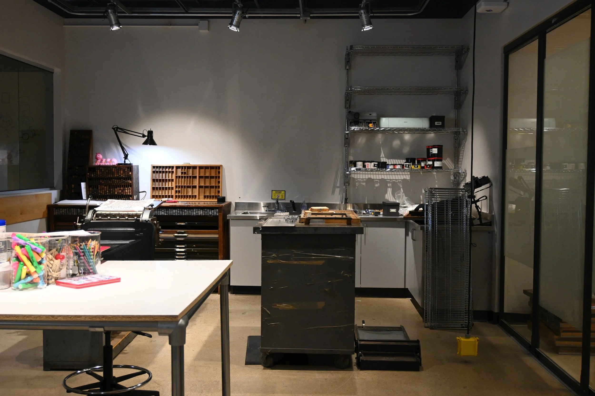
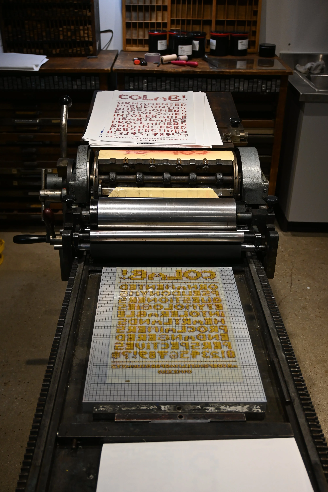
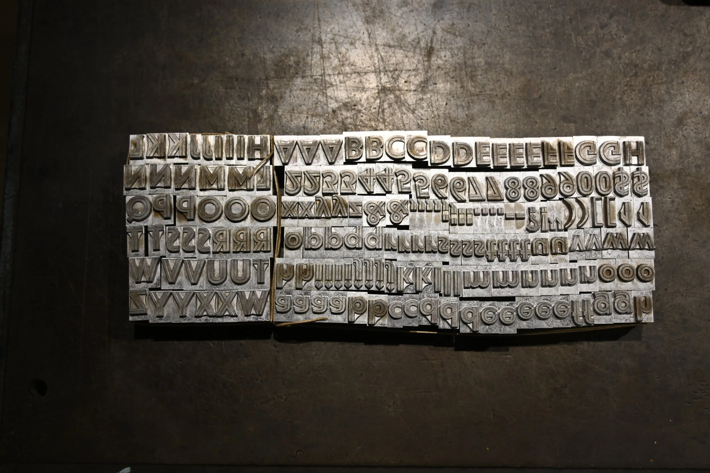

About
The Lab
TYPO Lab is a design lab doing weird things with text-based technologies.
Located on the second floor of the ATLAS/Roser Building, the TYPO Lab offers the space, technical resources, and faculty support to promote creative work and practice-based research into text-based technologies. The lab supports hourly undergraduate and graduate positions, provides hands-on access to historical and contemporary text-based technologies, and runs thematic and technical workshops and demonstrations for the CU Boulder community.
TYPO Lab explores the materiality of language, the way that the structures, forms, and physical inscription technologies of language play an active role in the construction of meaning. The lab offers access to a wide range of technologies related to text. From a movable type letterpress to state-of-the-art computer workstations equipped for machine learning projects, it facilitates the exploration of text-based technologies from historically broad and interdisciplinary perspectives.
Philosophy
"Typo" is an abbreviation for typography, but it also signifies a typographic error or mistake. Our lab logo, based on the form of an insertion edit mark used in proofreading, is a visual reminder of the generative potential of errors and mistakes.
The TYPO Lab frames the errors, glitches, and mistakes of text-based technology as a locus of creative inquiry and research. We rarely notice technology when it operates as intended and the lab welcomes unconventional and unorthodox use cases that can illuminate its limitations and affordances.
Further, TYPO Lab seeks to destabilize these technologies to uncover the cultural biases and norms frequently embedded within their construction. TYPO Lab seeks to be a diverse and inclusive home for creative, critical, and speculative design work that transcends disciplinary perspectives and boundaries.


